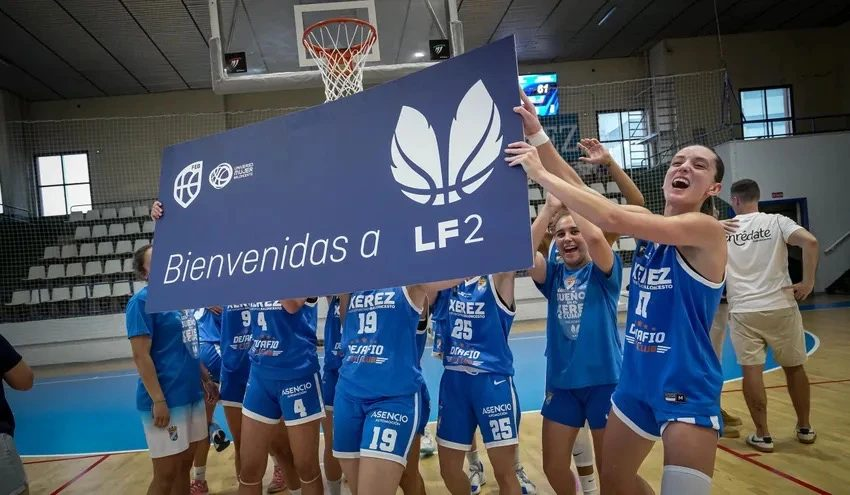

El otro Xerez que manda

Foto: Xerez CD BaloncestoMientras el equipo de fútbol pelea por el play off en Segunda RFEF, las jugadoras del Xerez CD Baloncesto lideran la Liga Femenina 2 en su primera temporada en la categoría. Merecen que el xerecismo las mire.
Un aficionado se quejaba hace unos días, con razón, de que nadie le da bola al baloncesto femenino del Xerez. Tiene razón, y en el Diario Xerecista vamos a empezar a dársela.
Cinco victorias seguidas. Líderes del Grupo B de la Liga Femenina 2 con cinco triunfos y una sola derrota, y la mejor diferencia de puntos de la zona alta. Y todo eso en su estreno en la categoría. Pocas veces un recién ascendido llega así.
El ascenso no fue casualidad. En junio, en el Ruiz-Mateos y ante su gente, el equipo de Trini Bou ganó con autoridad a San Ignacio y Al-Qázeres. Perdió por un punto el último partido ante Casablanca, pero el trabajo ya estaba hecho: el Xerez era de Liga Femenina 2. Había llegado un año después de quedarse a las puertas.
El mismo escudo
Es el mismo escudo que llevamos a El Palmar, a Tamaraceite o a Chapín. El Xerez CD no es solo un equipo de fútbol: es un club, con una sección de baloncesto que lleva casi una década creciendo y que hoy compite en la segunda categoría nacional.
Por eso cuesta entender que buena parte del xerecismo no sepa que su club manda en una liga nacional. Las victorias de estas jugadoras también son nuestras.
Llenar la grada
El fútbol nos ha enseñado lo que vale tener a la gente cerca. Ellas lo están ganando todo en la pista. Lo que les falta, y eso depende de nosotros, es una grada a la altura de lo que están haciendo.
Un club se hace grande cuando todas sus secciones sienten el mismo apoyo. Este Xerez del baloncesto ya ha hecho su parte. Ahora nos toca a nosotros.
🇬🇧 Read in English ← Volver a la portada